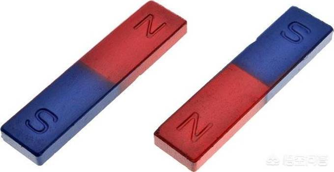
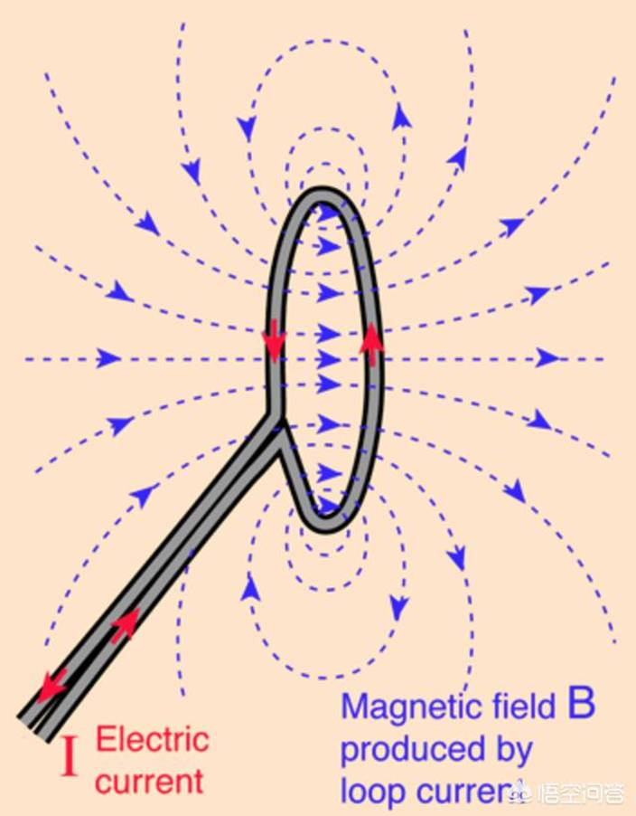
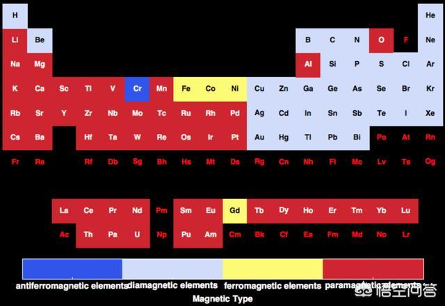
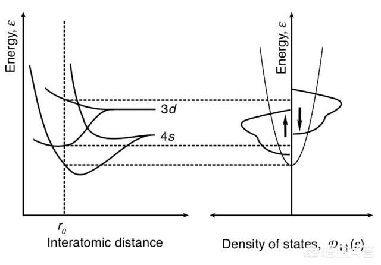

为什么只有吸铁的磁铁，没有磁铜或磁铝呢？
这个问题涉及对磁性的理解。
我们知道有电荷。电荷分两种，同性相斥，异性相吸。在自然界中，大部分物质（我们身边的物质）是以分子或原子的形态存在的，而分子/原子的主要性质取决于电子。
通过摩擦，物质之间可能发生电子的转移，这就是摩擦起电现象，通过摩擦起电，我们很早就知道世界上存在两种电荷。
磁性也是人们很早就认识到的一种自然现象，但和电现象不同，我们没法孤立出两种磁荷。

典型的磁现象涉及磁铁，磁铁一般是长条形的，这两端的行为很像电荷，N端和N端靠近是排斥的，而N端和S端靠近是吸引的。这让人猜测N和S就好像电荷的正或负，但我们无法把N端和S端分开，一旦强行分开，我们会得到两个磁铁，每个磁铁上都有相反的N和S。
因为这个原因，物理学家用“磁矩”，而不是磁荷来描述磁现象。但电和磁有关系，很快被法拉第等科学家发现了，简单说就是环形电流（比如电子围绕一个圆形轨道转圈）具有磁性，这让人们猜测磁性物质的分子具有环形电流，这些磁性累加起来体现为宏观的磁性。

环形电流，就相当于小磁铁，也有磁矩。磁性的本质要归结到“电”，从这个角度并不存在磁铜，磁铝。因为磁铁中导致相互吸引的原因并不是只和铁有关的特别的东西，是否具有磁性需要研究物质中电子的运动状况（原子核对磁性的贡献比电子对磁性的贡献小得多）。
按照这个思路，应该在磁性物体的表面存在“环形电流”，但可惜的是这个电流并没有被人们检测到。并且人们迄今为止也没有在自然界中观察到独立的磁荷。换句话说，我们观察到的磁性现象大多都与电有关。
根据量子力学，电子在原子内的运动可以归结为四个量子数，n，l，m和sz，其中m叫磁量子数，相当于电子在原子内作“轨道运动”所具有的“轨道角动量”的z分量，如果m不是0，电子相应地会具有磁矩，这和“分子电流”的概念有点像，区别是这里电子的运动必须用量子力学来描述。
此外，根据相对论性量子力学，电子还具有内禀的自旋，它在z方向上的分量是sz，自旋也会贡献磁矩。换句话说，原子内部的电子是磁性的来源，那么为什么元素周期表上的大多数物质不体现出磁性呢？

元素磁性的周期表，蓝色是反铁磁，浅蓝是抗磁，红色是顺磁，只有黄色是铁磁，对外体现出“磁性”，Gd也是铁磁的，但其居里温度只有292K（19°C），正好在室温时体现不出磁性。
一个原因是原子里面有很多电子，它们倾向于按照泡利不相容原理按照能量的高低从低到高排列，这导致大多数电子的磁矩相互抵消了，比如满壳层的电子，磁矩就互相抵消掉了。
对于固态中的原子，如果不是满壳层，则会和周围的原子形成共价键（半导体），或得失电子使得壳层变成满壳层（离子晶体），换句话说很多固态物质中的电子也不对外显示磁性了。此外，还有轨道淬灭概念，即处于晶格中的原子在特定条件下，轨道角动量的z分量平均值为0。
此外还有金属，对于金属来说，最外层电子是整个晶格共有的，它们处于一个连续的能带里，其中一半向上，一半向下，正好磁性互相抵消（铜和铝等金属就是这种情况）。除非金属的能带结构并不对称，使得某种自旋取向的电子更多，这样金属才有可能对外体现出磁性。

如图：4s电子对自旋向上和向下的能带是对称的，而3d电子则是不对称的。Cu的电子结构是3d^104s^1，换句话说Cu不具备磁性是因为其最外层只有4s电子。而铁（3d^64s^2）、钴（3d^74s^2）、镍（3d^94s^1）则分别都有未填充满的3d电子。铝的电子结构是3s^23p^1，因此铝也不具有磁性。
最后还要考虑居里温度（Tc），因为磁性的存在会使磁矩相互平行排列，但如果无规则热运动的能量过大，则会破坏这种平行排列，使得磁性没法对外体现出来。
换句话说，固体要对外显示出磁性，其条件是相当苛刻的，在天然物质中只有铁、钴、镍三种物质具有磁性，它们的居里温度分别是1043K，1400K和627K。
其他回答：
大学会学到，这是由元素电子结构排列式决定的。因为铁原子外层有多余的自旋单电子，而不是对电子，故原子内部磁场无法抵销，总体表现出铁磁性。同族元素金属，钴，镍同样会磁性。